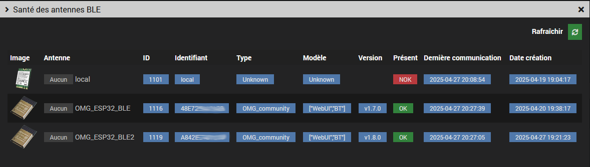

Ce plugin permet de scanner les devices bluetooth et de découvrir/gérer les antennes BLE OMG ESP32 ou Theengs gateway via MQTT. Il est possible de surveiller et de gérer les paramètres des antennes ESP32 mais pas les antennes Theengs qui ne supportent pas (encore?) l'auto-découverte Home Assistant.
Le plugin est complémentaire du #plugin-mqttdiscovery et il peut aussi fonctionner sans. Dans ce dernier cas seuls des devices inconnus seront affichés. Avec quelques modifications il serait aussi possible de détecter certains devices du #plugin-jmqtt (à vérifier)
 Le plugin requiert le #plugin-mqtt2.
Le plugin requiert le #plugin-mqtt2.
#plugin-mqttdiscovery#plugin-jmqtt (sous réserve)homeassistant
L'auto-découverte est active au démarrage, les antennes détectées sont ajoutées automatiquement. Vous pouvez également l'interrompre ou la relancer avec le bouton auto-découverte.

Seront affichés les devices déjà ajoutés aux plugins #plugin-mqttdiscovery et/ou #plugin-jmqtt
Il est également possible de filter les devices absents.

L'affichage contextuel peut se faire par atténuation ou par distance (si supporté).
Il s'active en sélectionnant un noeud. L'animation peut être mise en pause.
Il est également possible de filter les devices absents.
Affiche tous les devices non ajoutés dans les #plugin-mqttdiscovery ou #plugin-jmqtt.
Le bouton Ajouter permet de les ajouter au #plugin-mqttdiscovery.
Si le device est auto-découvrable ses commandes seront automatiquement ajoutées, sinon seuls la présence et le RSSI seront disponibles.




Les commandes disponibles dépendent du type d'antenne.
Le bouton Console web permet d'accéder à l'interface d'administration des ESP32.
Pour plus d'informations voir la doc des commandes ESP32
BT: Force scan ou reboot de l'ESP32)SYS: Auto discoveryBT: Publish HASS presenceVoir le forum Jeedom community